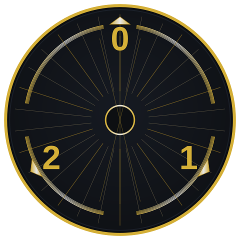
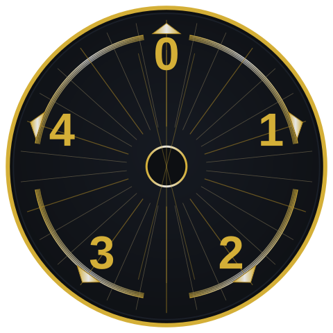
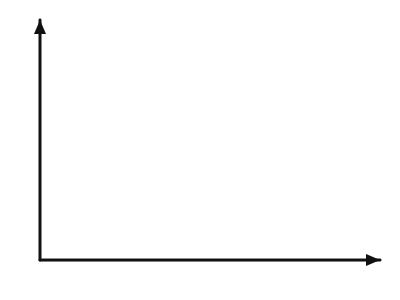

DSCI 220, 2025 W1
October 6, 2025
Definition: \(a \equiv b \pmod m \iff m \mid (a-b)\)
If \(a \equiv b \pmod m\) and \(c \equiv d \pmod m\), then:
Reduce anytime: reduce intermediate results mod \(m\) at any step.
Caution (division): “Division” is only valid when a modular inverse exists.
\(\gcd(a,m)=1\Rightarrow a^{-1}\) exists, and \(ax \equiv b \pmod m \Rightarrow x \equiv a^{-1}b \pmod m\).
Caution (exponents): From \(a\equiv b \pmod m\) you may raise the bases: \(a^n\equiv b^n\), but in general \(c^{a}\not\equiv c^{b}\pmod m\).
When does a number \(a\) not have an inverse \(\bmod m\)?
Consider \(5x \bmod 12\):
Consider \(9x \bmod 12\):
A number \(a\) has an inverse \(\bmod m\) iff \(\gcd(a,m)= 1\).
Solve:
Pick one:
Find \(t\pmod {15}\) such that
\(t\equiv 2\pmod 3\) and \(t\equiv 1\pmod 5\).


05:00
Math: a function is a mechanism for translating items from one collection to another.
\(f: A\to B\)
Our current interest is quantifying the way that functions grow.
Functions as costs:
generally non-negative.
generally non-decreasing with size of input.
Sketch:

A function \(f(n) = O(g(n))\) iff there are positive constants \(c\) and \(n_0\) such that \(f(n)\leq c\cdot g(n)\) for any \(n\geq n_0\).
Prove that \(3n^2 + 7n + 2 = O(n^2)\).
Defn: … there are positive constants \(c\) and \(n_0\) such that \(f(n)\leq c\cdot g(n)\) for any \(n\geq n_0\).
Therefore, \(c=\)____ and \(n_0=\)____ witness the claim.
Goal. To prove \(f(n)=O(g(n))\), show there exist constants \(c>0\) and \(n_0\) such that
for all \(n\ge n_0\), \(f(n)\le c\,g(n)\).
Pick your region.
Choose \(n_0\) where simple comparisons are true (e.g., for \(n\ge 1\), \(n^2\ge n\); for \(n\ge e\), \(\log n\ge 1\)).
Dominate each term by \(g(n)\).
On \(n\ge n_0\), bound every term of \(f\) by a constant multiple of \(g\):
\(f(n)=\text{(term}_1)+\dots+\text{(term}_k)\ \le\ a_1 g(n)+\dots+a_k g(n)\).
Add and name the constant.
Sum the multipliers: \(f(n)\le (a_1+\cdots+a_k)\,g(n)\).
Set \(c=a_1+\cdots+a_k\).
State the line that matters.
“For all \(n\ge n_0\), \(f(n)\le c\,g(n)\). Therefore \(f(n)=O(g(n))\).”